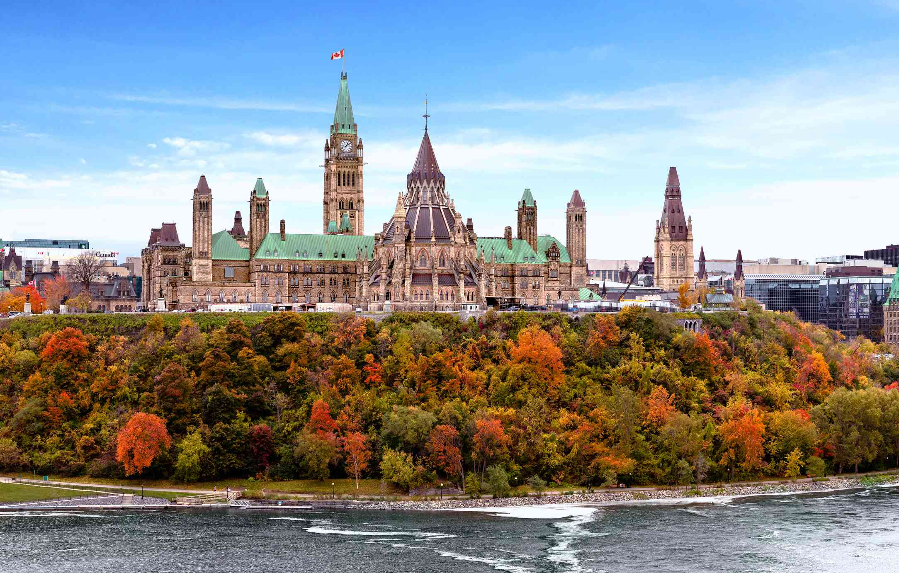
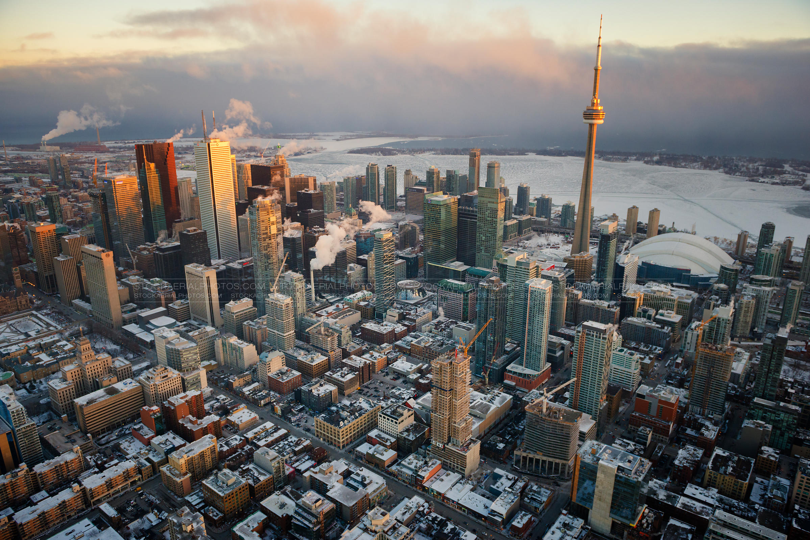
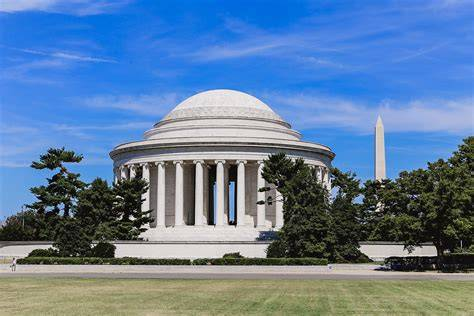

Ottawa
Capital canadense com arquitetura histórica, museus nacionais e belas paisagens às margens do rio.

Vancouver
Cidade costeira vibrante cercada por montanhas, natureza exuberante e cultura urbana diversificada.

Toronto
Metrópole multicultural com arranha-céus icônicos, bairros animados e rica cena gastronômica.

Broken Bow
Refúgio natural tranquilo com florestas, lago cristalino e aventuras ao ar livre.

Washington, D.C
Capital dos EUA com monumentos históricos, museus famosos e importantes centros políticos.
